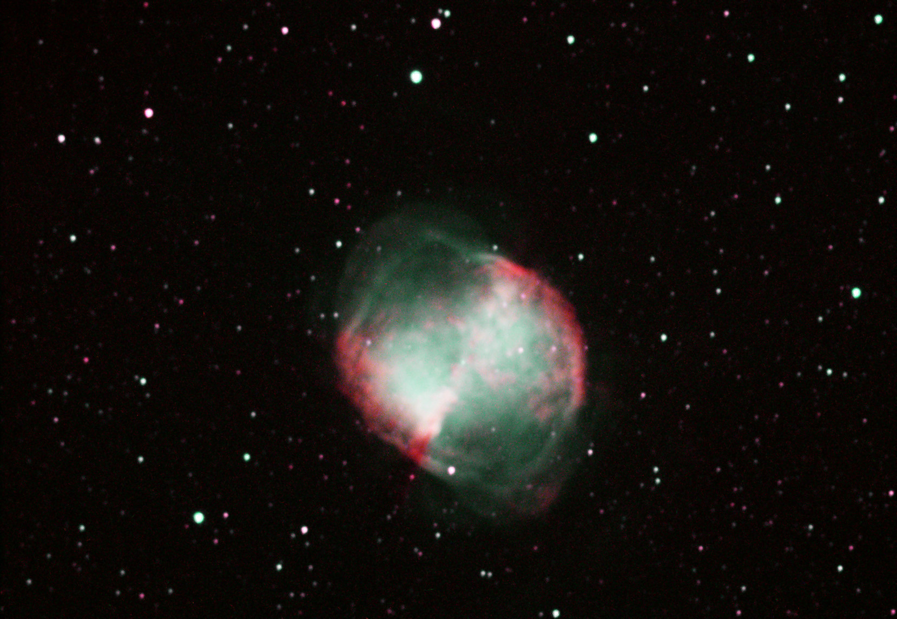

M27(NGC 6853)
The Dumbbell Nebula
CPOD: 25 June 2017 - M27
M27(NGC 6853)
| Type | Planetary Nebula |
| Const | Vulpecula |
| RA | 19h 59m 36.4s |
| Dec | +22° 43′ 16″ |
| Dist |
417 pc |
| mag(V) | 7.3 |
| Dim(arcmin) | 8'.0 × 5'.6 |


| *** Seasonal Observability of M57 *** | |||||||
|---|---|---|---|---|---|---|---|
| RA & dec:,19 59 36.4, +22 43 16, epoch 2000.0 Site long&lat:,+5 07 56.8 (h.m.s) West, +39 38 50 North. |
|||||||
| Evening | Midnight | Morning | |||||
| 2017 | moon | ha | secz | ha | secz | ha | secz |
| Jun 8 | F | -5 23 | 2.8 | -2 50 | 1.3 | -0 17 | 1 |
| Jun 23 | N | -4 17 | 1.8 | -1 48 | 1.1 | +0 42 | 1.1 |
| Jul 8 | F | -3 23 | 1.4 | -0 46 | 1.1 | +1 52 | 1.1 |
| Jul 22 | N | -2 42 | 1.3 | +0 11 | 1 | +3 04 | 1.4 |
| Aug 7 | F | -2 03 | 1.2 | +1 13 | 1.1 | +4 30 | 1.9 |
| Aug 21 | N | -1 33 | 1.1 | +2 05 | 1.2 | +5 44 | 3.4 |
| Sep 5 | F | -1 01 | 1.1 | +3 00 | 1.3 | +7 02 | 17.3 |
| Sep 19 | N | -0 32 | 1.1 | +3 50 | 1.6 | +8 13 | down |
| Oct 5 | F | +0 04 | 1 | +4 48 | 2.1 | +9 32 | down |
| Oct 19 | N | +0 39 | 1.1 | +5 40 | 3.2 | +10 42 | down |
| Nov 3 | F | +1 20 | 1.1 | +6 38 | 7.7 | +11 56 | down |
About the Image
Equipment
- Telescope: 14in f8 LX850 SCT
- Camera: Atik 383L mono CCD
- Filters: Baader Ha, OII filters